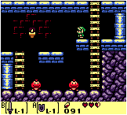

Tile games don't al have to be top down. We can change perspectives pretty easily. In this chapter we are going to do just that. Instead of the game playing top-down we're going to make it play from a side view. Mario style! The gameboy zelda games do include some side scrolling sections:

Let's make a new project, call it Jumping and get this project up to par with the cleaned up OpenTheDoor section of the writeup. We're going to work from here.
One of the most important things in turning our tile engine from top down into a side scroller is to not allow horizontal movement! Let's add a new #define the top of the PlayerCharacter.cs
//#define ENABLE_VERTICAL_MOVEMENT
Have the new define be commented out as we're not going to be using it! Now go to the Update function, and find the if-elseif block that handles up and down movement. Put this into a #if block, add a #else block, we're going to be working in the #else block.
#if ENABLE_VERTICAL_MOVEMENT
// Vertical movement code
#else if
// We're going to be writing the code for this section in here.
#endif
Adding gravity is going to be pretty straight forward, first let's declare a new member variable and call it gravity. This veriable represents how many pixels the character is going to fall per second. So, if we wanted him to fall 2 tiles we would have to set gravity equal to 2 * 30.
protected float gravity = 7 * 30; // Fall 7 tiles / second
Now go to the #else block and add gravity times delta time to the players y position every frame. If you run the game the player character will simply fall down, your application might or might not crash. Let's fix this by adding some collision detection.
In the commented out (by the #if section of code we have some code to handle the case of link trying to walk down and off screen. We're going to copy ONLY the collision handling part of that code, and paste it after updating the players position by gravity. This is the bit of code i'm talking about:
if (!Game.Instance.GetTile(Corners[CORNER_BOTTOM_LEFT]).Walkable) {
Rectangle intersection = Intersection.Rect(Rect, Game.Instance.GetTileRect(Corners[CORNER_BOTTOM_LEFT]));
if (intersection.Width * intersection.Height > 0) {
Position.Y = intersection.Top - Rect.Height;
}
}
if (!Game.Instance.GetTile(Corners[CORNER_BOTTOM_RIGHT]).Walkable) {
Rectangle intersection = Intersection.Rect(Rect, Game.Instance.GetTileRect(Corners[CORNER_BOTTOM_RIGHT]));
if (intersection.Width * intersection.Height > 0) {
Position.Y = intersection.Top - Rect.Height;
}
}
Run the game again and you should now be colliding with tiles. Link starts off on a platform and can walk left or right to fall. You can even enter the other room!
If you are trying to figure out how to make a 2D character jump, google will sooner or later take you to this stack overflow answer. The answer gives the standard jump parabola, to jump you need two forces:
We're going to use these two forces, but they will not both effect the player. Gravity is going to be constantly pulling velocity down. Velocity will be moving the player. We will also introduce a third force, Impulse.
Gravity will always be pulling velocity down, and velocity will move the character. So how can velocity ever push the character up? In order to do so we have to apply another force to velocity, this force is impulse. While gravity is constantly pulling down, impulse will suddenly push up.
Example 1: Character is at (30, 60). Our velocity is 0. Gavity is 2.
As you can see from this 5 frame example, the simple model outlined above has one simple flaw, velocity is constantly increasing! The longer the character falls, the faster he will fall! We're going to fix this by clamping velocity to gravity: velocity = Math.Min(velocity, gravity. I don't think i need to include an example for the clamped velocity. But let's see an example with it in place where we apply an impulse!
Example 2: Character is at (30, 60). Our velocity is 0. Gavity is 2. Impulse is -6
I feel like a companion gif would be really helpful, but i have no idea how to make proper gif images. If the above doesn't make sense give me a call and i will try my best to explain it!
Let's start by adding our new variables. Gravity and impulse are constant forces, they don't change frame over frame. But velocity does:
float gravity = 210.0f; // Fall 7 tiles / second, constant
float impulse = -180.0f; // Randomly chosen, constant
// Impulse is negative because the force is going up!
float velocity = 0.0f; // Changes every frame
Next, we need to change the update method.
gravity * deltaTime to Position.Y add velocity * deltaTimegravity * deltaTime to velocity! This moves velocity down.velocity, it can never be greater than gravity!Run the game now, and nothing has changed! If you did everything correctly you should be able to walk around, fall off the platform, all kinds of fun! Let's add the code to actually jump. Before applying gravity to velocity, check is the space bar is pressed. If it is, set velocity equal to impulse. This is how we apply the impulse force. Run the game now and you should be able to jump after having fallen off the platform the character starts on.
Hint The above paragraph contains some code instructions that are easy to miss I tried to bold it to make them stand out.
Run the game and confirm you can jump. The jumping might feel a bit floaty right now, but that's ok. We will fix that later. Right now we have a bigger problem. There is no top collision! You can jump right out of the game! Kind of an easy fix. We already have code to prevent link from moving trough tiles upwards in the commented out #if block, let's go ahead and add that back in. Paste the top collision checking code after the code to check for floor collision. This is the bit that i'm talking about:
if (!Game.Instance.GetTile(Corners[CORNER_TOP_LEFT]).Walkable) {
Rectangle intersection = Intersection.Rect(Rect, Game.Instance.GetTileRect(Corners[CORNER_TOP_LEFT]));
if (intersection.Width * intersection.Height > 0) {
Position.Y = intersection.Bottom;
}
}
if (!Game.Instance.GetTile(Corners[CORNER_TOP_RIGHT]).Walkable) {
Rectangle intersection = Intersection.Rect(Rect, Game.Instance.GetTileRect(Corners[CORNER_TOP_RIGHT]));
if (intersection.Width * intersection.Height > 0) {
Position.Y = intersection.Bottom;
}
}
It's almost perfect. However if you jump up and hit your head, you kind of float around for a while... This is immediateley obvious when you jump below the first platform. The reason for this should be obvious by now, velocity is pulling link up, but the tile collision clamps his position. This however doesn't stop velocity from pulling him up.
The fix is simple, we need to change velocity! We need to apply this code in two places, after each collision handler (Position.Y = intersection.Bottom;, still inside the area check if statement). But what do we set velocity to??? As it turns out we have three options, i encourage you to try all three:
So yeah, in my code i set velocity = Math.Abs(velocity);, i suggest you do the same, it looks the best and is closest to what would actually happen in the real world.
Now that the jump is functional, let's add an animation to it. If you look at the link sprite sheet, he has a jump animation! First, add the jump sprite to the player character:
AddSprite("Jump", new Rectangle(122, 75, 23, 30), new Rectangle(154, 76, 22, 30));
Next, in the if statement that sets impulse, set the sprite as well
if (i.KeyPressed(OpenTK.Input.Key.Space)) {
velocity = impulse;
SetSprite("Jump");
}
Lastly, after the above if statement add a new one. We're going to check if velocity is anything else than gravity. If so, we're going to call animate, because link is mid-jump.
if (velocity != gravity) {
Animate(deltaTime);
}
Run the game and you're going to notice several stange artifacts. Link starts out animated. Landing a jump shows the wrong sprite. Landing on a higher platform keeps the animation playing. These are simple bugs introduced by the new animation. Luckly we can fix them pretty easy. Let's do that one at a time.
Link start out animated, this is the easyest one. When the game starts velocity is equal to 0, not gravity. So, technically even tough link has hit a platform he is still falling. Find the code that handles links collision with objects below him, and set velocity equal to gravity. Hint: You will have to do this in two places, just like the code where he hit his head.
Now, when link lands a jumphe stays in a strange sate that is just his last jump sprite. The fix would be to set the sprite back to link left or link right, but we don't know which direction he started the jump from. While we could add some bools and figure this out, let's take a more creative approach. Find the code where link lands on an object below him. Before setting velocity to gravity, if velocity does not equal gravity, set his sprite to down. Like so:
if (intersection.Width * intersection.Height > 0) {
Position.Y = intersection.Top - Rect.Height;
if (velocity != gravity) {
SetSprite("Down");
}
velocity = gravity;
}
This works because the only time link connects with the ground and has a velocity different from gravity is if he is comming out of a jump. When link falls his velocity is already equal to gravity. One more big bug remains, if you jump and press left or right to move mid jump, link plays his walk animation. Luckily we can fix this using the same trick.
Find where you set links sprite to left and right, and wrap it in an if statement. The if statement should check if velocity equals gravity (if (velocity == gravity) {) and encompas both the SetSprite call and the Animate call.
Right now link can jump indefinateley, i think that might actually be called flying at this point! Let's limit him so he can only do one jump at a time. Now, one jump is a bit tricky, he will be able to jump if he's on the ground, or mid fall (so long as he is falling from a platform, not a jump).
The fix here is easy, only add impulse if the players velocity is not the same as gravity. Because the players velocity is only the same as gravity if they are on the ground, or if they are falling from a platform. So find this bit of code:
if (i.KeyPressed(OpenTK.Input.Key.Space)) {
velocity = impulse;
SetSprite("Jump");
}
And change the if statement to this:
if (i.KeyPressed(OpenTK.Input.Key.Space) && velocity == gravity) {
We're almost done! Jumping is mechanically correct and the visuals look decent. The only problem is the "feel" of the jump. It's a bit floaty for my taste, i also think it could go a tad higher. We're going to fix that in the next section.